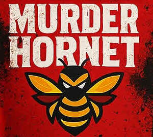

Trade Mark Journal No.2025/032 8 August 2025
UK00004239161 24 July 2025 (29,30)

The claim is for the words "MURDER HORNET" and the hornet motif. The red and black background they are on should be ignored as part of the claim.
The claim is for the words "MURDER HORNET" and the hornet motif. The red and black background they are on should be ignored as part of the claim.
- Class 29
- Nut-based snack foods; Potato snacks; Legume-based snacks; Snack foods based on nuts; Flavored nuts; Potato snack foods; Edible nuts; Flavoured nuts; Potato crisps in the form of snack foods; Potato-based snack foods; Salted nuts.
- Class 30
- Confectionery; Chocolate confectionary; Chocolate confectionery; Fondants [confectionery]; Liquorice [confectionery]; Sugar confectionery; Chocolate-coated sugar confectionery; Lollipops [confectionery]; Truffles [confectionery]; Chocolate flavoured confectionery; Pastilles [confectionery]; Chocolate confectionery products; Confectionery chocolate products; Marshmallow confectionery; Sherbet [confectionery]; Tablet (confectionary); Confectionery ices; Sherbets [confectionery]; Flavoured sugar confectionery; Chocolate confections; Mallows [confectionery]; Dairy confectionery; Chocolate confectionery containing pralines; Liquorice flavoured confectionery; Peppermint for confectionery; Fruit confectionery; Non-medicated confectionery candy; Non-medicated chocolate confectionery; Ice confectionery; Chocolate for confectionery and bread; Flour confectionery; Almond confectionery; Lozenges [confectionery]; Frozen confectionery; Truffles (rum -) [confectionery]; Sesame confectionery; Confectionery items coated with chocolate; Sweets (Non-medicated -) in the nature of sugar confectionery; Peanut confectionery; Mint for confectionery; Confectionery items formed from chocolate; Confectionery bars; Nut confectionery; Chocolate confectionery having a praline flavour; Non-medicated sugar confectionery; Sugar confectionery (Non-medicated -); Sherbets [confectionery ices]; Chocolate decorations for confectionery items; Malt dextrin glazings for confectionary; Sugar paste for confectionery; Non-medicated confectionery containing chocolate; Candy coated confections; Stick liquorice [confectionery]; Low-carbohydrate confectionery; Dragees [non-medicated confectionery]; Prepared desserts [confectionery]; Cocoa-based ingredients for confectionery products; Confectionery made of sugar; Confectionery (Non-medicated -); Non-medicated confectionery; Confectionery chips for baking; Ginseng confectionery; Non-medicated flour confectionery containing chocolate; Ice confectionery in the form of lollipops; Non-medicated flour confectionery coated with chocolate; Confectionery in the form of mousses; Fruit jellies [confectionery]; Jellies (Fruit -) [confectionery]; Ice confections; Boiled confectionery; Zephyr [confectionery]; Rock [confectionery]; Ice cream confectionery; Boiled sugar confectionery; Chocolate sweets; Non-medicated flour confectionery; Non-medicated mint confectionery; Mint flavoured confectionery (Non-medicated -); Non-medicated flour confectionery containing imitation chocolate; Iced confectionery (Non-medicated -); Sweets [candy]; Zefir [confectionery]; Confectionery containing jelly; Non-medicated flour confectionery coated with imitation chocolate; Yoghurt (Frozen -) [confectionery ices]; Frozen yoghurt [confectionery ices]; Crystal sugar pieces [confectionery]; Confectionery containing jam; Fruit drops [confectionery]; Mousse confections; Confectionery in frozen form; Sweetmeats [candy]; Potato flour confectionery; Sweetmeats [candy] being flavoured with fruit; Frozen dairy confections; Confectionery items (Non-medicated -); Frozen confections; Lozenges [non-medicated confectionery]; Non-medicated confectionery products; Confectionery products (Non-medicated -); Coated nuts [confectionery]; Chocolate fillings for bakery products; Frozen yogurt [confectionery ices]; Yogurt (Frozen -) [confectionery ices]; Chocolate candies; Candies [sweets]; Orange based confectionery; Caramels [sweets]; Pastila [confectionery]; Chocolate flavoured beverages; Cachou [confectionery], other than for pharmaceutical purposes; Non-medicated confectionery having toffee fillings; Snack foods consisting principally of confectionery; Sweets (Non-medicated -) in the nature of chocolate eclairs; Chocolate syrups for the preparation of chocolate based beverages; Crystal sugar [not confectionery]; Preparations for making of sugar confectionery; Bubble gum [confectionery]; Chocolate syrups; Confectionery in liquid form; Peppermint pastilles [confectionery], other than for medicinal use; Non-medicated confectionery having a milk flavour; Herbal honey lozenges [confectionery]; Sweetmeats being candies; Ice cream confections; Caramels [candy]; Chocolate pastries; Non-medicated flour confections; Chocolate beverages; Sweets; Frozen confectionery containing ice cream; Confectionery in the form of tablets; Sweets (Non-medicated -) being acidulated caramel sweets; Chocolate marzipan; Non-medicated confectionery in the form of lozenges; Non-medicated confectionery containing milk; Sweets (candy), candy bars and chewing gum; Chocolate desserts; Clear gums [confectionery]; Non-medicated confectionery in jelly form; Sugar-free sweets; Peanut butter confectionery chips.
Joe Akers-Douglas